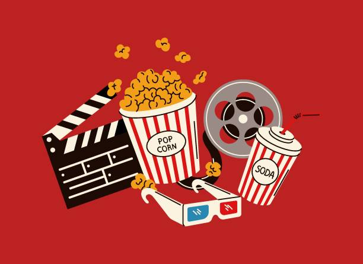
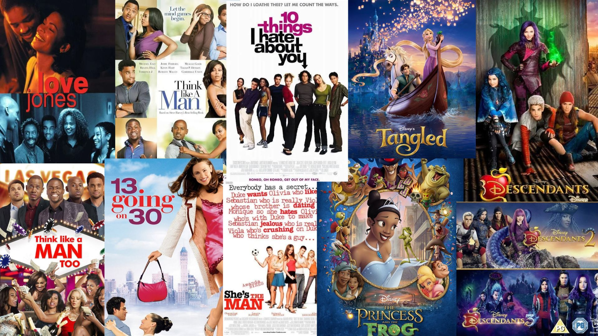

Nothing like a good Show or Movie
October 04, 2026 by Janae Boreland

When I'm bored and want to relax, shows and movies always do me right.
I love a good show or movie that I can just lie down and watch, whether
it's one that makes me smile, cry or laugh. Overall a good watch always
does the trick to take my mind off what's around me.
A few genres of shows or movies I love are romance, comedy and action. I
like these because love stories always make me feel warm, comedy cheers
me up no matter what, and action always has me on edge for what's going
to happen next. One genre I'm not a big fan of is horror. Any serious
horror movies that are genuinely scary make me scared and anxious, so
I typically stay away. If it's a comedy horror that's not that scary though,
I can handle those. In the end, I love a great show or movie.
All about Romcoms
October 05, 2026 by Janae Boreland

I love movies in my free time, and I love all sorts of genres.
Despite that, one genre I'll always be in the mood for is romance
comedy movies. I love romance (not for myself but for others), so it
just makes sense for me to love watching movies that display it. Honestly
though, they always help calm my nerves and give me smth to laugh or
giggle about.
To me, I split romance comedy movies into different categories, and a few of
those categories are animation romcoms, white people romcoms and black people
romcoms, and I have top threes for each. My top three for animation/disney are
Tangled, Princess and the Frog, and the Descendants trilogy. Rapunzel will always
have space in my heart as my favorite princess as well. Moving on, my favourite
white romcoms are 10 Things I Hate About You, She's The Man, and 13 going on 30.
Lastly my favourite black romcoms are Love Jones, Think Like A Man, and Think
Like A Man Too. Overall I love a good Romcom and my watchlist grows each month
with ones I haven't watched before, but plan to watch in the future.
In the end, I LOVE Romcoms.